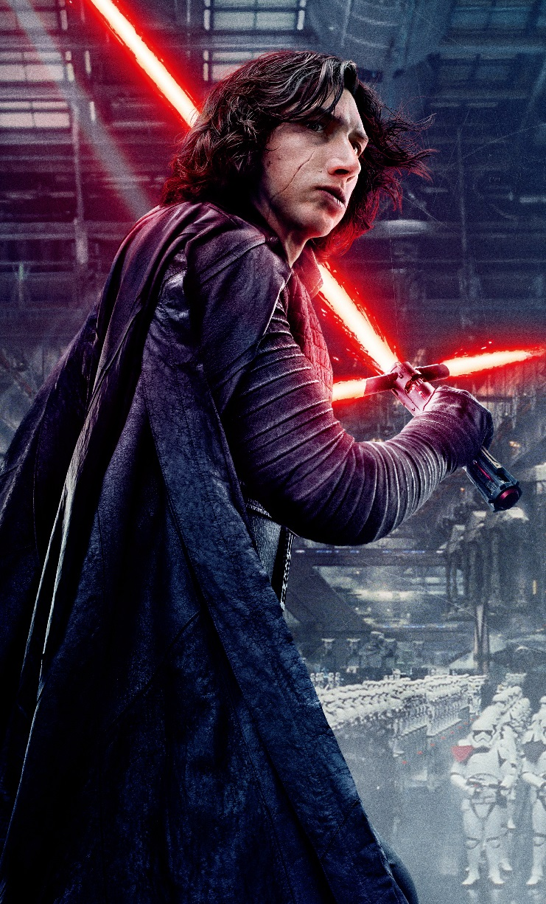

A dark warrior strong with the Force, Kylo Ren commands First Order missions with a temper as fiery as his unconventional lightsaber. As a leader of the First Order and a student of Supreme Leader Snoke, he seeks to destroy the New Republic, the Resistance and the legacy of the Jedi.He was strong wiht the force asa young one but changed and choice the path to the dark side . His parents are also part of the new republic, han solo, and princess lia.His grandfather was also darth vader the evil sith lord before him.Kylo evn killed his own fathe han solo to prove to his master snoke that he was evil that he should be concidered as a new lord to help him push away the people he loves inorder to become who he believes he should become a sith lord. but as he rose to glory a women awaken a force inside her and become more powerful then kylo without any training. Heer
